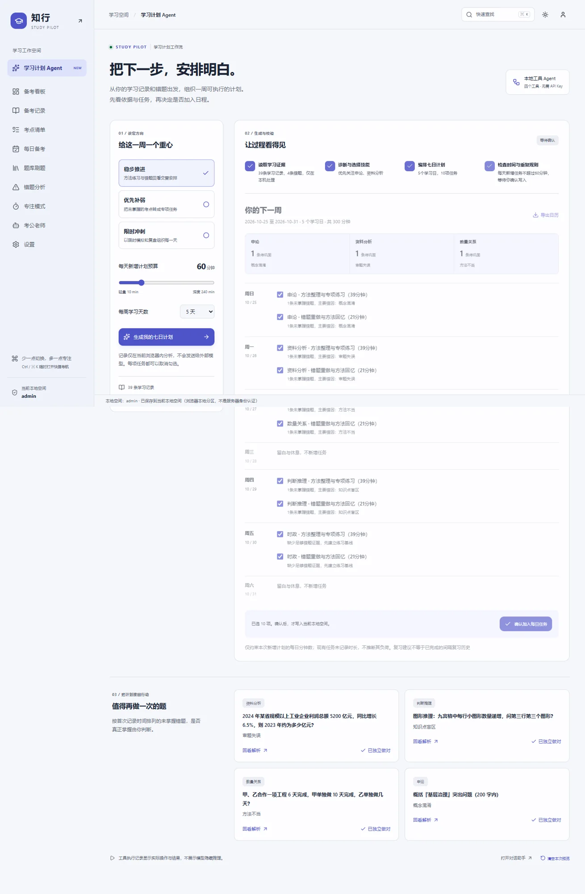
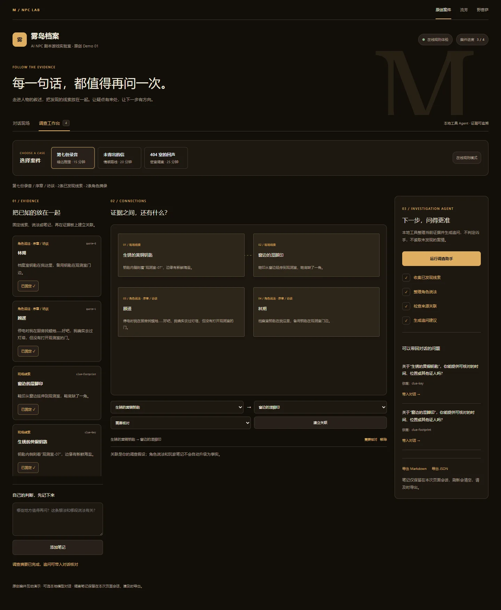
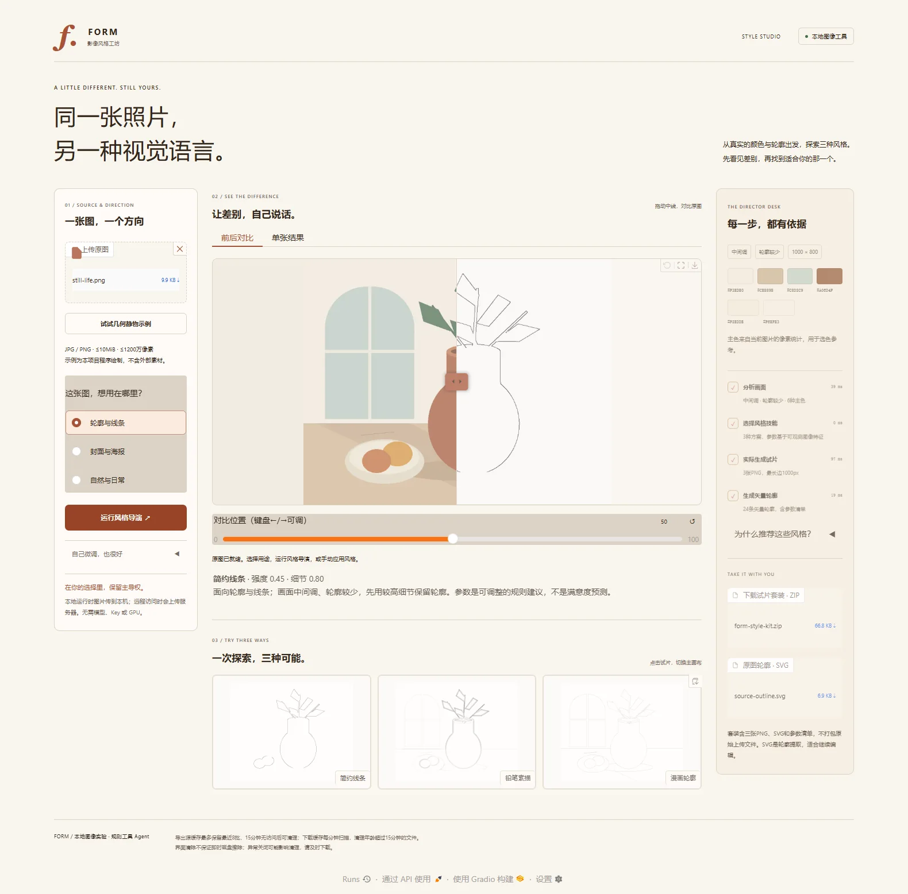
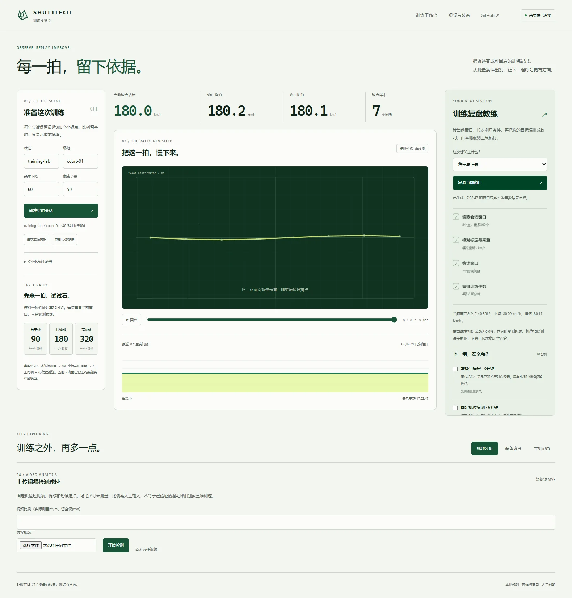

RELEASE NOTES / 2026.10.25
让四个原型，
各自走完一条有用的流程。
本轮在此前正确性与权限修复基础上，为四个项目增加可操作的工具流程、新界面与状态动效；测试、代码和仓库内 Skill 一起交付。这里逐项列出新增功能、验证与仍需完成的企业条件。
四仓代码已推送 · 对应 GitHub 检查通过
新规划、调查整理、风格导演和训练复盘使用可追溯的本地规则工具；已有模型接入单独标明。没有使用模型效果或企业认证来替代测试证据。
kaogong-study-admin
Study Pilot · 七日学习规划
学习画像 → 薄弱方向 → 预算排程 → 校验 → 预览选择 → 确认写入

蓝灰 / 靛蓝工作台；浅深主题、桌面侧栏与手机抽屉，Ctrl/⌘K命令导航。 点击图片查看全图。手机预览 ↗
已交付
- 三种排程策略、每日时间预算和每周学习天数，七天时间线包含休息日。
- 任务显示生成理由；选中后原子写入，每个计划任务有稳定ID，重复操作不新增。
- 错题复习队列与已掌握归档，选择计划导出ICS；换行注入与UTF8折行有测试。
验证证据
35 项单元 + 7 项浏览器 E2E；lint / build通过。
有效验证包含时间预算/轮转、存储配额失败不污染已有数据、并发批量写入、重复确认、下载、键盘导航和移动端。
成功的GitHub检查 ↗ · 提交 2efd6c6 ↗
仓库维护 Skill ↗
当前边界
个人浏览器内工具。学习效果尚未经过真实用户对照评测；默认排程是确定性规则。
距离企业使用
- 服务端账号、组织/角色权限与数据库；当前本地空间不等于企业身份认证。
- 跨设备同步、审计记录、版本迁移、备份与恢复演练。
- 模型密钥代理、费用与访问控制；如启用模型，需要独立验证建议质量和数据流。
可用于个人学习计划与求职演示；企业团队试用前先补身份与云端数据层。
mystery-npc-lab
雾岛档案 · 调查工作台
收集已发现线索 → 整理实际角色说法 → 检查来源 → 建议下一问

暖黑 / 琥珀的调查界面；三页统一导航、对话与调查切换，证据连线和状态反馈。 点击图片查看全图。手机预览 ↗
已交付
- 事实、角色说法、玩家笔记分开；选择固定证据并手动标记印证、冲突或待核对。
- 调查助手只读取当前案件的已知内容；问题带来源ID，可直接带入对话继续核对。
- 三页接入；案件笔记隔离，JSON / Markdown导出。场景切换取消旧回复，文字安全显示。
验证证据
8 项 Python + 3 项 JS 单元 + 2 组浏览器流程通过。
有效验证包含来源投影、跨案件隔离、隐藏字段不进入导出、模型文字/笔记XSS、关联、问题带入、导出与手机布局。
成功的GitHub检查 ↗ · 提交 4728681 ↗
仓库维护 Skill ↗
当前边界
调查助手为本地规则工具；角色对话可连接Ollama，失败明确回退规则。笔记仅存在当前页面会话，刷新清空。截图使用规则模式，不作为真实模型质量证据。
距离企业使用
- 持久化、用户及内容管理、会话恢复、权限与租户隔离。
- 真实模型的剧透、角色一致性、越界提示和叙事体验评测，保留人工剧情控制。
- 并发负载、限流/资源治理、内容及素材许可，模型部署与运行监控。
适合交互叙事作品和本地试玩；商用游戏仍需内容生产、模型评测与在线服务层。
photo-style-gallery
FORM · 影像风格工坊
读取像素 → 分析主色与轮廓 → 选择用途和参数 → 三款试片 → 导出

奶油纸色 / 陶土编辑器；源图、主画布、导演桌三栏，手机自适应，试片和结果有反馈动效。 点击图片查看全图。手机预览 ↗
已交付
- 从真实亮度/边缘密度/颜色出发推荐参数，一次实际生成三张PNG，可点击切换与继续微调。
- 原图/结果拖动和键盘比较；显示真实主色、推荐依据与工具耗时。
- 轮廓SVG与ZIP套装；清单含源图SHA256和实际参数，不打包原始上传文件。
- 原创程序绘制静物示例，10MiB/1200万像素上限、队列限制和有界过期缓存。
验证证据
36 项 Python（含真实Gradio接口）+ 浏览器完整流程通过。
有效验证包含图像统计、非法参数、SVG路径和大小边界、实际ZIP文件、源图不外泄、缓存容量/过期清理，以及真实生成/选图/对比/下载/清除。
成功的GitHub检查 ↗ · 提交 bf45b6e ↗
仓库维护 Skill ↗
当前边界
确定性图像算法；SVG为轮廓提取，非语义矢量化。远程访问时图片上传服务器，两层缓存清理不等于即时擦除或用户隔离。
距离企业使用
- 多租户隔离、访问授权、数据加密与可审计的保留/删除机制。
- 真实人像/产品/复杂背景盲评，按图片类型评估质量；并发、内存和延迟基准。
- 隔离执行环境、依赖升级/漏洞扫描、任务恢复与生产监控；若增加模型，另加授权与费用控制。
可作为本地图像工具；共享对外服务前先补隔离、留存和运行保障。
shuttlekit
ShuttleKit · 训练实验室
读取当前窗口 → 核对来源与比例 → 统计 → 编排目标练习 → 勾选与导出

雾白 / 球场绿；会话设置、画面轨迹、复盘教练三栏与独立工具Tab，回放可暂停或键盘逐点查看。 点击图片查看全图。手机预览 ↗
已交付
- 使用最近300个真实接收点，重算时间间隔、画面路径和速度；模拟/设备声明/未验证逐点保存，混合来源提示。
- 轨迹按采样时间间隔比例回放，总时长自适应0.8–12秒；场地背景明确不是物理落点。
- 三个训练目标，18分钟四项练习；显示依据、完成勾选，JSON / Markdown导出无令牌。
- 只读显示端也能复盘；窗口更新提示快照过期，请求可取消，过期回复不覆盖结果。
验证证据
89 项 Python + 原有/教练两组真实浏览器流程通过。
有效验证包含未知与零、细小比例、源窗口截断、越界/非法点、读写和跨会话权限、真实广播、导出、回放、取消/失败、重置及未标定单位。
成功的GitHub检查 ↗ · 提交 3fac062 ↗
仓库维护 Skill ↗
当前边界
二维投影估计，未标定只报告px/s；来源是发送端声明，不是设备认证。模拟不评价运动能力，训练任务来自所选目标，不自动诊断动作。
距离企业使用
- 代表性合法真实视频、独立测速真值、几何/三维标定和跨机位误差验证。
- 设备身份、凭据撤销/轮换、场馆租户隔离、数据库、消息总线与备份恢复。
- 视频编解码隔离、吞吐/延迟SLO、设备离线与重连治理、监控及HTTPS/WSS；装备价格和许可持续维护。
可作为数据链路和训练记录实验工具；在独立真值验证前，不适合商业测速承诺。
框架参考与维护方式
参考官方仓库 LangGraph 的有状态工具与人工确认模式、assistant-ui 的工具结果交互、xyflow 的关联表达，以及 Impeccable 的设计方法。保留原技术栈，自行实现所需的小模块；没有声称已集成这些框架，也没有复制其代码或素材。
每仓包含 PRODUCT.md、DESIGN.md、docs/DESIGN_REFERENCES.md 与专用 SKILL.md。Skill 是维护和扩展指南，未伪装成已经自动安装、执行或具备大模型能力的运行系统。
部署位置
Study Pilot 可在 GitHub Pages 在线体验；其余三个项目代码已更新到GitHub，按README在本地运行。Python / Ollama / WebSocket后端需要独立服务环境，不能仅靠GitHub Pages运行。
下一阶段的合理顺序
先做真实场景试用与质量基线，再补身份、存储、隔离与可观测性，最后根据明确的使用规模增加模型和部署能力。功能增多不等于可以直接承诺企业生产可用。